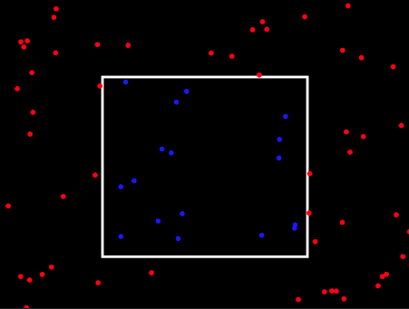

Datum: 02.02.2026
Bearbeiten Sie die folgenden Aufgaben und schreiben Sie Ihre Lösungen in die IDE-Fenster direkt unter den Aufgaben, so wie Sie es im Praktikum kennengelernt haben. Unter den IDE-Fenster finden Sie Buttons, mit der Sie Ihre Lösungen speichern können. Denken Sie bitte unbedingt daran, regelmäßig auch Zwischenstände Ihrer Lösungen zu speichern.
Viel Erfolg!
Mit Hilfe einer Java-Funktion sollen ganzzahlige Noten (1, ... , 5; engl. grade) in Textausdrücke (sehr gut, ... , ungenügend) konvertiert (umgewandelt) werden. Dafür wird Ihnen bereits Programm-Code vorgegeben, den Sie bitte korrigieren bzw. erweitern, sodass dieser eine Konvertierung entsprechend der Tabellenwerte ermöglicht und dabei die genannten Anforderungen erfüllt. Zum Testen können Sie den Programm-Code von Main.java ausführen. Bitte verändern Sie den Code in Main.java nicht.
| Note | Ausdruck |
|---|---|
| 1 | sehr gut |
| 2 | gut |
| 3 | befriedigend |
| 4 | ausreichend |
| 5 | ungenügend |
Anforderungen:
Erstellen Sie eine Funktion range, die als Parameter ein double-Array x bekommt und
für die übergebenen Werte die Spannweite bestimmt. Die Spannweite range(x)
ergibt sich als Differenz aus dem Maximum xmax und dem Minimum xmin
aller Array-Werte x:
range(x) = xmax - xmin
Beispiel: x = [1.3, -2.4, 5.6, 10.9, 20.1, -17.4] range(x) = 37.5
In dieser Aufgabe soll ein Programm implementiert werden, dass bestimmen kann, ob 2D-Punkte innerhalb oder außerhalb eines vorgegebenen Fensters (Window) liegen. Sie haben dafür die aus dem Praktikum bekannten Klassen Point und PointRGB sowie eine Methode randomPoints bereits gegeben. Entwickeln Sie nun einen Punktfilter (window filter). Bearbeiten Sie dazu bitte die folgenden Teilaufgaben.
Teilaufgaben:
In der Datei Main.java sehen Sie einen Beispielaufruf für das gesamte Programm, das dieselbe Ausgabe erzeugt, wie es in der folgenden Abbildung dargestellt ist, sofern alles korrekt implementiert ist.
